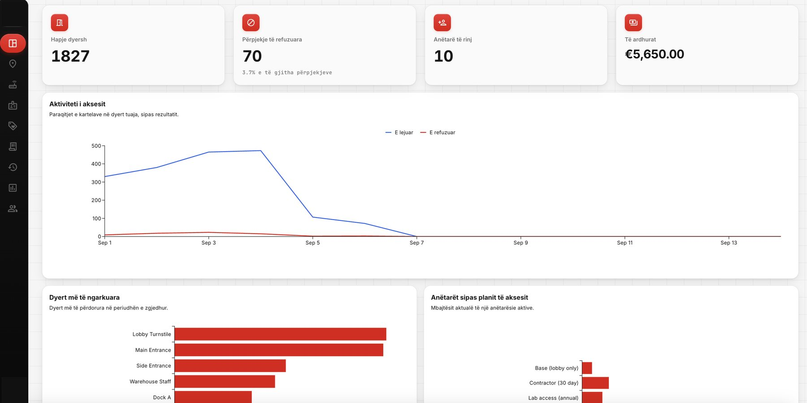
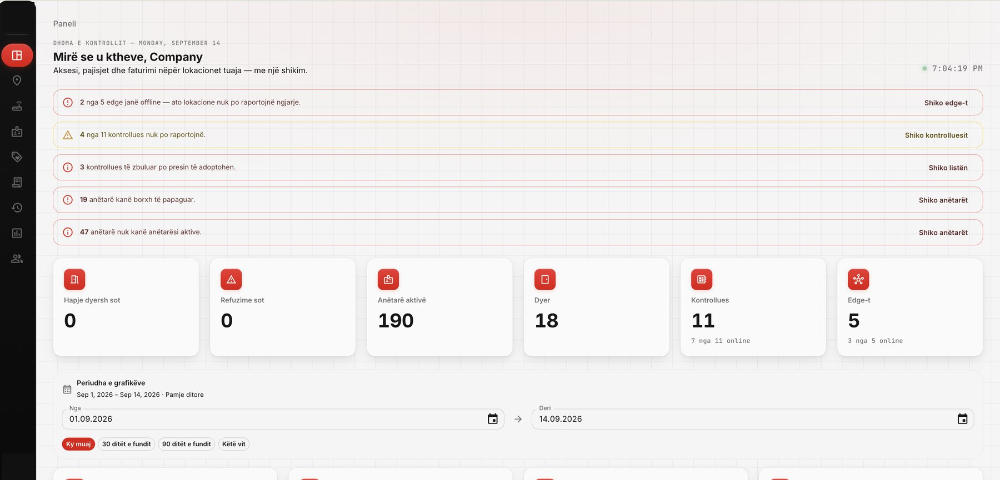
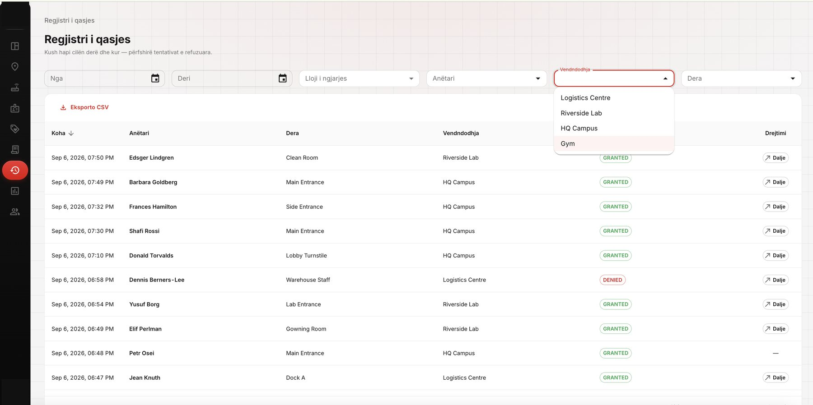
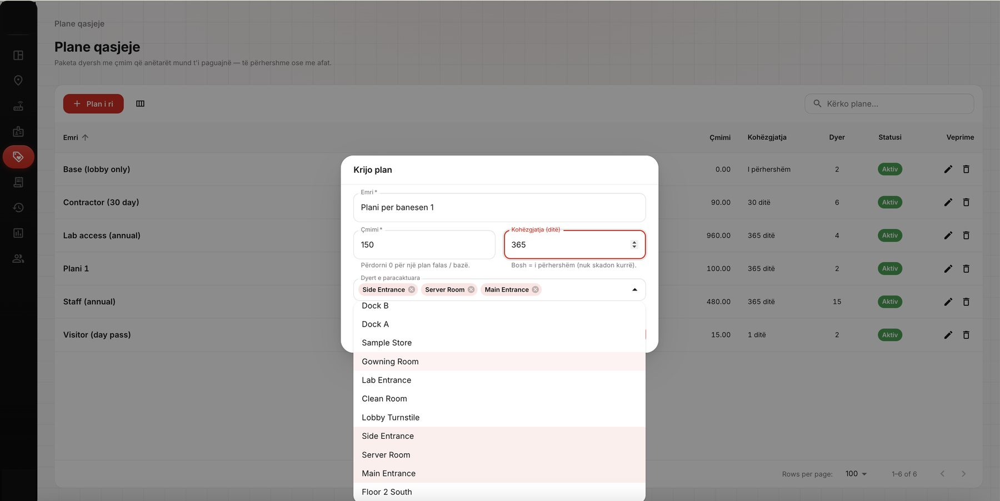
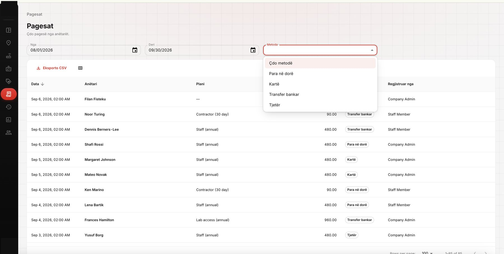
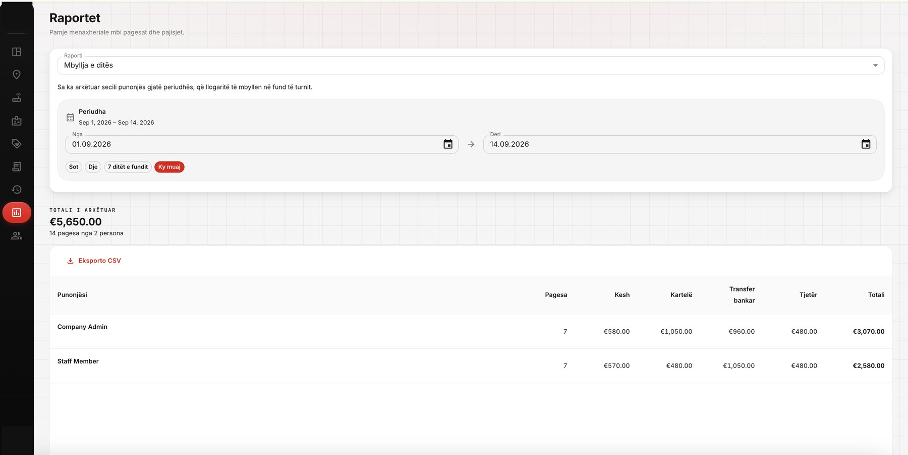

Access analytics
Door openings, rejected attempts, new members and revenue across every site, charted by day and by door.
Home / Work
Each entry names the process before, the system we shipped, and the measurement we agreed at the start.
Doors, controllers and edge devices across several locations, run from one console — with the membership plans, payments and end-of-day reporting that used to live in spreadsheets built into the same system.

Door openings, rejected attempts, new members and revenue across every site, charted by day and by door.

Offline edge devices, silent controllers and unpaid members surfaced on one screen before anyone has to ask.

Every door event, granted or denied, filterable by site, member and door, with one-click CSV export.

Paid door bundles, fixed-term or permanent, created and assigned to doors in a single dialog.

Cash, card and transfer payments recorded against each member and the staff member who took them.

What each employee collected, by method, totalled and ready to reconcile at the end of a shift.
Where a client cannot be named, we can still walk you through the architecture, the constraints, and the measurement on a call. Ask for the closest comparable to your own problem and we will bring it.
Send the problem. A reply from an engineer within one business day.